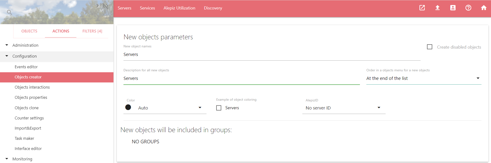
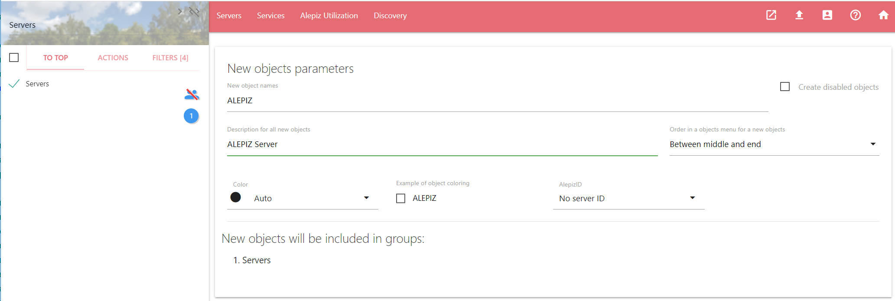
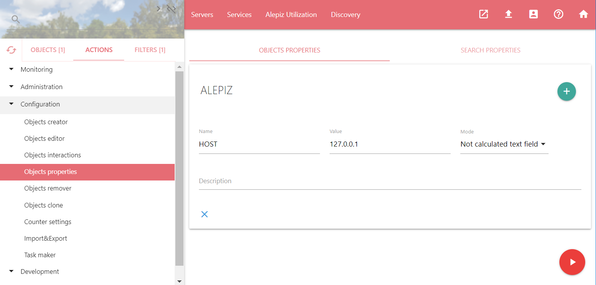
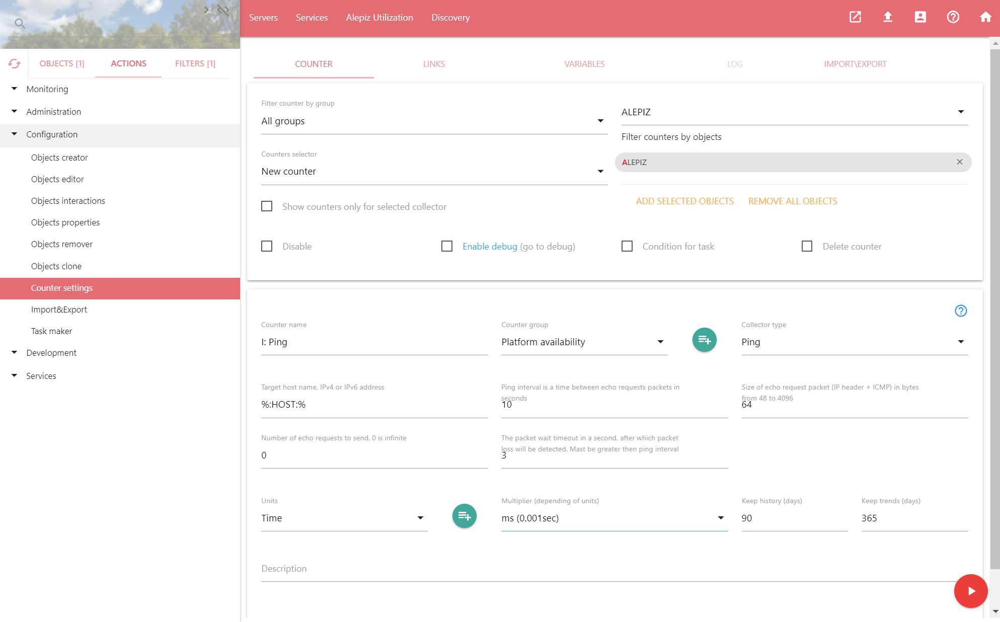
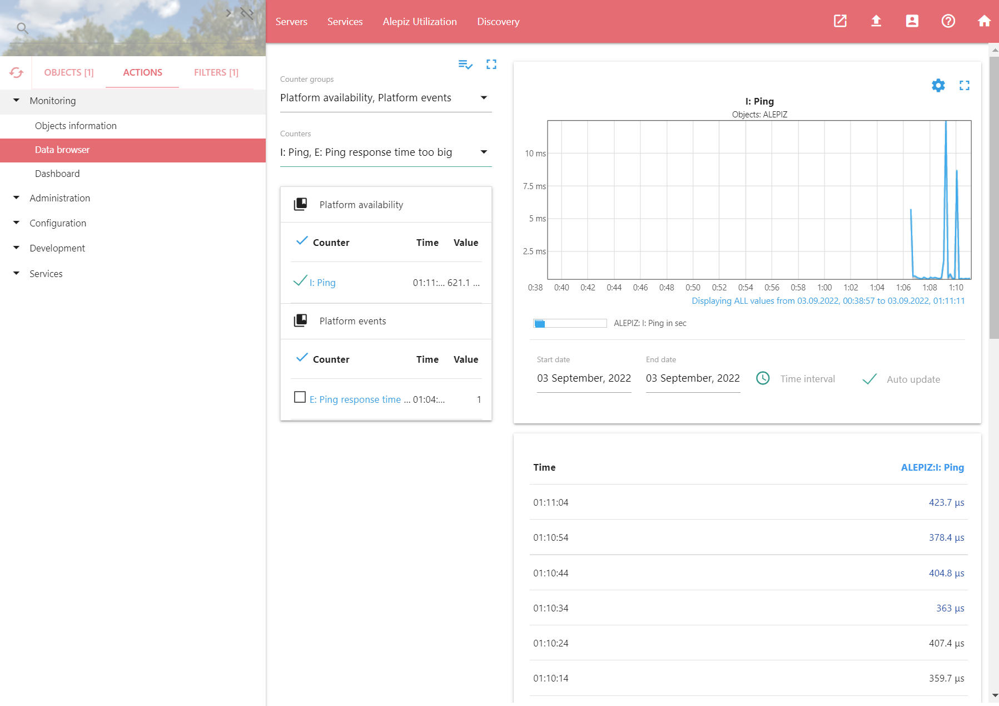
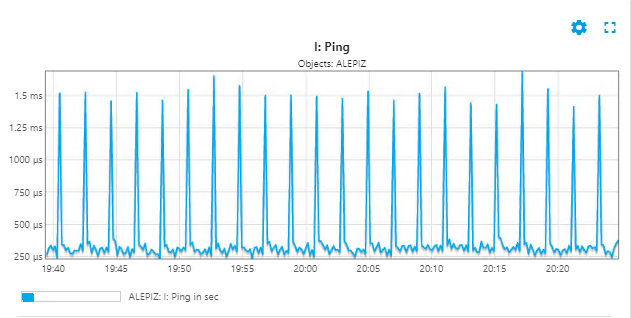
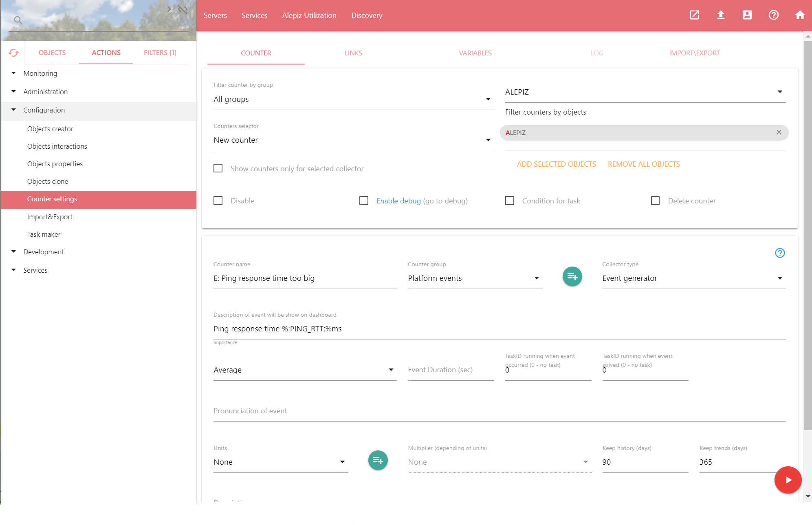
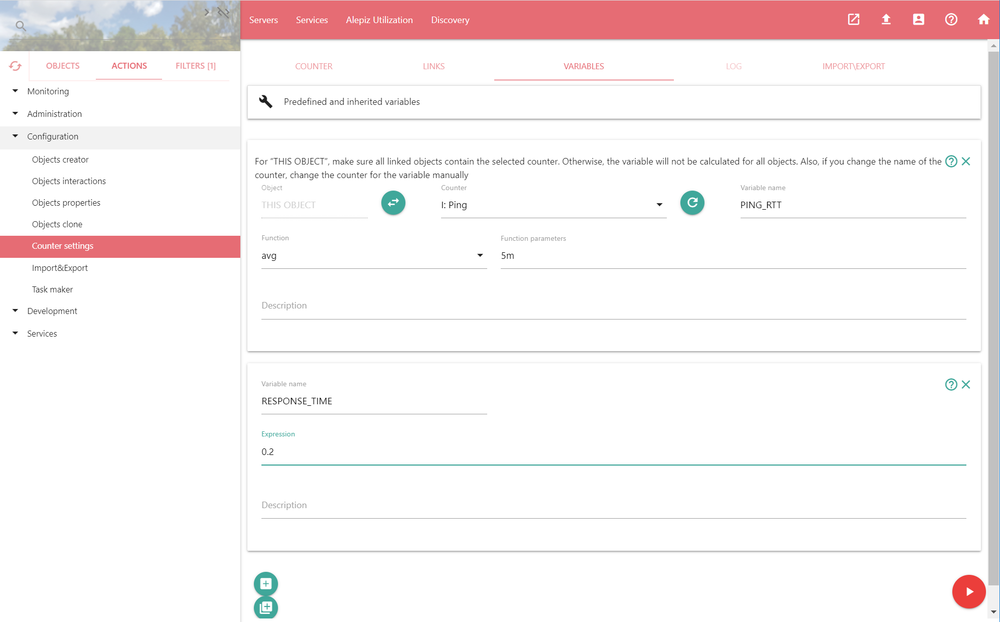
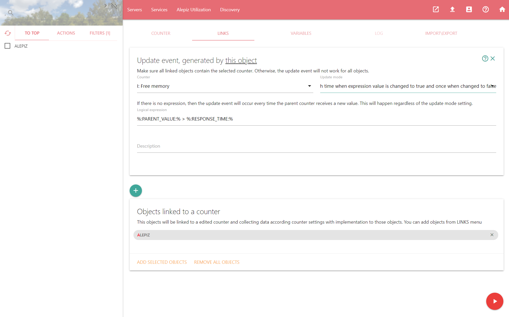
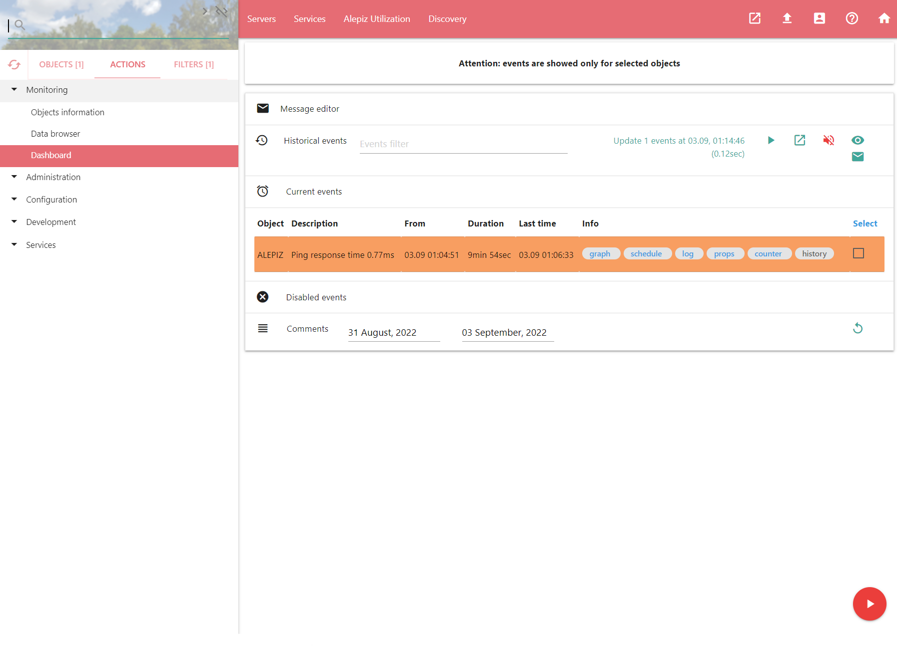

Если вы еще не установили ALEPIZ, пожалуйста воспользуйтесь инструкцией по установке.
Подробно познакомится с интерфейсом системы ALEPIZ можно на странице помощи Интерфейс ALEPIZ
Если нажать на иконку help_outline в правом верхнем углу экрана, появится помощь по работе с выбранным действием или всей системой, если действие не выбрано.
Для выполнения действия необходимо нажать на play_arrow. После этого на экране снизу появится окно с информацией о выполнении действия. До тех пор, пока действие не запущено, введенные изменения не будут применены.
Создание новых объектов
Создание объекта "Servers".
Это будет группа в которой будут находится серверы. Для создания объекта Servers, из системного меню Actions, которое находится слева, запустим действие Configuration\Objects creator и заполним поля, как на скриншоте:
В качестве имени объекта в поле "New object names" введем "Servers". В поле "Description for all new objects" введем описание для объекта "Contains servers". Оно будет появляться при наведении курсора мышки на объект. Для того, чтобы создать объект верхнего уровня, в поле "Order in a objects menu for a new objects" необходимо выбрать один из трех последних пунктов:
- On Top and at up level
- At the middle and at up level
- At the end and at the up level
Для завершения изменений необходимо запустить выбранное действие на выполнение.
Если в системном меню, которое находится слева, выбрать вкладку Objects, мы увидим созданный нами объект "Servers", как на скриншоте ниже.
Создание объекта - сервер "ALEPIZ".
Поместим его в группу "Servers". Для этого выберите объект "Servers", щелкнув левой кнопкой мыши на элементе типа CheckBox слева от объекта. В действии "Objects creator" в поле "Groups for new objects" появится выбранный объект: "Servers".
Далее необходимо заполнить поля, как на скриншоте ниже и выполнить действие по созданию нового объекта "ALEPIZ".
Если после создания объекта "ALEPIZ" в системном меню Objects нажать на объект "Servers", то отобразятся объекты, включенные в объект "Servers". В данном случае это будет созданный нами объект - "ALEPIZ".
Создание свойства объекта
Создадим свойство для объекта ALEPIZ. Название свойства будет HOST, а значением IP адрес нашего сервера.
Необходимо выбрать объект ALEPIZ, в системном меню Objects, переключиться, на вкладку Actions и выбрать действие Configuration\Objects properties. Далее, в окне действия, нажать на кнопку добавления свойства объекта add и создать свойство, заполнив поля как на скриншоте ниже. После этого выполнить текущее действие. У объекта "ALEPIZ" появится свойство HOST со значением "127.0.0.1". В дальнейшем, мы будем его использовать для указания счетчикам, с какого хоста необходимо собирать данные.
В некоторых случаях в ОС Windows отключен loopback интерфейс и проверять доступность IP адреса 127.0.0.1 невозможно. В этом случае вместо адреса 127.0.0.1 введите реальный IP адрес сервера. Его можно посмотреть, запустив в командной строке программу ipconfig.exe /all. Для проверки того, доступен или нет loopback интерфейс можно запустить в командной строке программу "ping.exe 127.0.0.1".
Создания счетчика PING
Создадим счетчик, который будет раз в 10 секунд отправлять пакеты по протоколу ICMP хосту по адресу, указанному в свойстве HOST, и записывать в базу данных время прохождения пакетов.
В качестве объекта у нас должен быть выбран "ALEPIZ". В системном меню Actions необходимо выбрать действие Configuration\Counter settings. Введем название нового счетчика в поле "Counter Name": "I: Ping". Буква "I" будет означать, что счетчик является информационным, чтобы потом, когда счетчиков будет много, по названию счетчика можно было быстро определять его тип. В поле "Counter group" выберем группу для нового счетчика "Availability". В качестве сборщика в селекторе "Collector type" выберем "Ping".
Далее необходимо заполнить параметры для сборщика Ping. В поле "Target host name IPv4 or IPv6 address" введем переменную "%:HOST:%" - свойство объекта, которое мы создали на предыдущем шаге. Символы %: и :% вокруг "HOST" означают, что данный объект является переменной. Использование переменной "%:HOST:%" вместо указания константы "127.0.0.1" позволит нам привязывать созданный счетчик "I: Ping" к другим объектам и собирать с них данные, в зависимости от установленного для каждого из объектов значения свойства HOST. Меняем значение по умолчанию поля "Ping interval..." с 1 на 10 секунд. Значение поле "Number of echo request to send" устанавливаем в 0. Это означает, что мы не будем ограничивать количество отправленных пакетов. Остальные параметры сборщика Ping оставляем без изменений. Для получения помощи о сборщике можно нажать на иконку help_outline в правом верхнем углу формы с настройкой параметров сборщика
Сборщик Ping возвращает данные в миллисекундах. Для корректного отображения полученных данных необходимо установить единицы измерения. Для этого в поле "Units" выбираем "Time", а в поле "Multiplier" выбираем "ms (0.001sec)".
Сборщик Ping является активным сборщиком и собирает данные самостоятельно через установленные в его параметрах интервалы времени. В нашем случае это 10 секунд. Поэтому устанавливать зависимости от какого-то другого счетчика в данном случае не требуется.
После заполнения всех требуемых полей запускаем действие Counter settings на выполнение.
Просмотр собранных данных
Для того, чтобы посмотреть данные, которые начал собирать сервер, необходимо выбрать действие Monitoring\Data Browser. В списке счетчиков слева выбрать наш счетчик "I: Ping". Появится график с данными по счетчику за интервал времени - 1 сутки. Чтобы увидеть наши данные, необходимо уменьшить время, отображаемое на графике, примерно до 30 минут. Для этого нужно выделить мышкой требуемую часть графика, в нашем случае крайнюю справа. Для возврата графика к предыдущему состоянию необходимо нажать мышкой в любой его части. Если после выбора интервала времени данные не обновляются, необходимо включить элемент "Auto update latest data", находящийся под графиком.
Создание счетчика, генерирующего событие
Создадим сложный счетчик, который при превышении порогового значения счетчика "I: Ping" будет генерировать событие. Для того, чтобы определиться с пороговым значением, необходимо посмотреть на график счетчика ping и выбрать значение, которое счетчик достигает. В нашем примере, время прохождения пакета обычно больше 200 микросекунд. Поэтому, для того, чтобы событие гарантировано генерировалось, в качестве порогового значения выберем превышение времени прохождения пакета в 200 микросекунд, то есть 0.2 миллисекунды. В ALEPIZ время указывается в миллисекундах.
В качестве объекта у нас должен быть выбран "ALEPIZ". В системном меню Actions необходимо выбрать действие Configuration\Counter settings.
Вкладка Counter
После выбора Counter settings мы окажемся на вкладке Counter (вкладки находятся сверху окна действия). Подходящей группы для нашего счетчика нет, поэтому создадим ее. Для этого рядом с полем "Counter groups" нужно нажать на кнопку . Выберем пункт "Add new group (and enter name of the new group bellow)". Введем название новой группы "Platform events" и нажмем Apply.
Введем название нового счетчика в поле "Counter Name": "E: Ping response time too big". Буква "E" будет означать, что счетчик является генератором событий. Выбираем созданную группу "Platform events" в "Counter groups". В качестве сборщика в поле "Collector type" выберем "Event generator".
Вводим параметры сборщика. В поле "Description of event..." введем "Ping response time: %:PING_RTT_AVG:% ms". Это поле будет отображаться в Dashboard, когда наступает событие. В поле используется переменная %:PING_RTT_AVG:%, которую мы определим позже. В поле Importance поставим важность события - 4. Чем меньше цифра, тем событие важнее. В поле "Pronunciation of event" введем текст на русском языке, который будет произносится при наступлении события: "Время прохождения пакетов до хоста %:OBJECT_NAME:% больше %:PING_RTT_AVG:% миллисекунд" В поле используется встроенная переменная %:OBJECT_NAME:%, которая будет заменена на имя объекта. Переменную %:PING_RTT_AVG:% определим позже.
Вкладка Variables
В окне действия переключаемся на вкладку Variables и определяем переменные. Введем константу "RESPONSE_TIME", которая будет определять предельное значение прохождения пакета. Для этого нужно нажать на library_add и заполнить поля, как на скриншоте.
Далее определим переменную "PING_RTT_AVG", которая будет вычисляться из исторических значений, собранных счетчиком "I: Ping". Для этого нужно нажать на add_box и заполнить поля, как на скриншоте. В данном случае используется функция AVG(5m), которая в нашем примере считает среднее арифметическое из исторических значения счетчика, полученных за последние 5 минут. Результат вычисления этот функции будет отображен на Dashboard и произнесен голосом, когда событие наступит.
По всем функциям можно получить помощь, нажав на иконку help_outline в правом верхнем углу формы с параметрами переменной.
Вкладка Links
В окне действия переключаемся на вкладку Links. Вкладка служит для управления привязкой счетчика к объектам и создания зависимостей от родительских счетчиков с событиями, при наступлении которых счетчик будет запускаться и получать новые данные.
Счетчики не могут существовать без привязки к объектам. В данном окне показано, что счетчик подключен к объекту ALEPIZ.
Настроим зависимость текущего счетчика от родительского счетчика "I: Ping". Сделаем универсальный счетчик, который будет зависеть не от родительского объекта ALEPIZ, а от любого объекта, к которому привязан счетчик. Для этого, перед созданием зависимости, нужно перейти в системное меню Objects и убрать выделение с объекта ALEPIZ.
Далее, для добавления зависимости, в окне действия необходимо нажать на add и заполнить поля формы как на скриншоте ниже. Проверяем, что событие для обновления счетчика отвязано от какого-либо объекта, то есть в форме с событием есть надпись "Update event, generated by this object".
В поле "Counter" выбираем родительский счетчик "I: Ping".
В поле "Update mode" выбираем режим обновления события "Update each time when expression value is changed to true and once when changed to false", что означает, что событие будет обновляться каждый раз, когда логические выражение, отвечающее за генерацию события, будет принимать значение true и один раз, когда логические выражение, отвечающее за генерацию события, будет примет значение false. Такой режим обновления необходим для того, чтобы каждый раз, когда время прохождения пакета превышало предельно допустимое значение, переменная %:PING_RTT_AVG:% вычислялась заново и в Dashboard отображалась актуальная информация о текущем времени прохождения пакетов.
В поле "Logical expression" необходимо ввести логические выражение, отвечающее за генерацию события. В нашем случае выражением будет служить сравнение значений переменных %:PARENT_VALUE:% > %:RESPONSE_TIME:%. То есть если встроенная переменная %:PARENT_VALUE:%, значение которой равно последнему полученному значению счетчика "I: Ping", окажется больше, чем значение переменной переменной %:RESPONSE_TIME:% (в нашем случае это 0.2), то событие будет сгенерировано.
Запускаем действие Counter settings на выполнение
Просмотр событий
Для просмотра событий используется действие Monitoring\Dashboard. Необходимо его выбрать. Если вы правильно подобрали предельное значение для события, то оно должно сгенерироваться и отобразиться в Dashboard, как на скриншоте ниже. Возможна небольшая задержка перед генерацией события, не более 5 минут. Она связана с обновлением кэшированных параметров сервера.
